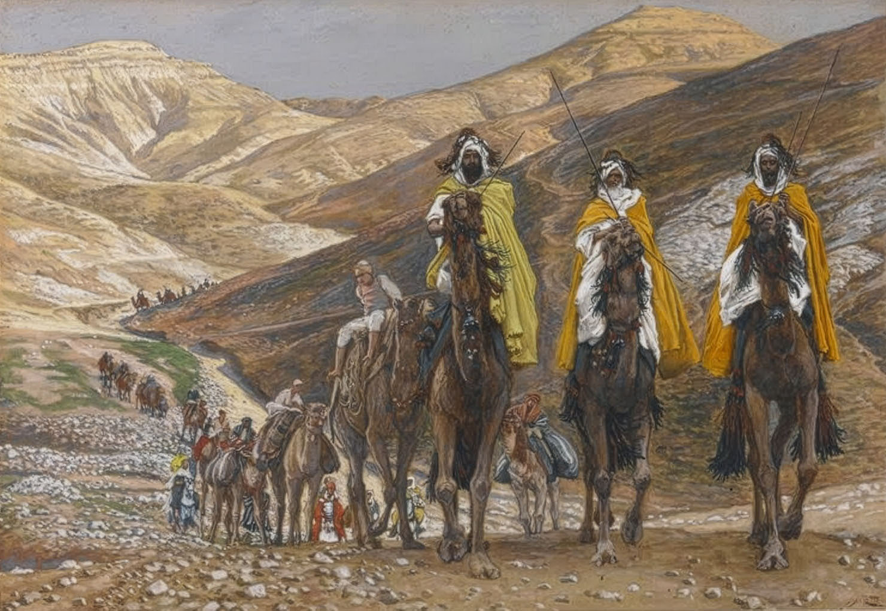

Three Wise Men
A pendulum between uncertainty, reverie, and hope

Scores & Recordings
Recording
Summary
Prompted by Vasile Voiculescu’s strange poem Magii, this choral piece follows the unsettling ambiguity of three seekers whose journey remains suspended between wonder and failure. Its musical language alternates clusters and polychords with stable triadic sonorities, tracing a discontinuous path between uncertainty, reverie and hope.
Imprint
| Orchestration | SATB Choir with a Mezzo Soprano Soloist / |
|---|---|
| Lyrics | Vasile Voiculescu, „Magii” (1916) |
| Duration | 10:07′ |
| State | Finished |
| Completed | 2018 |
| Premiered | — |
| Performed by | — |
| Honors | Acquired by UCMR (2019) / |
| Copyright | Claudius Iacob |
Program notes
My encounter with one of Vasile Voiculescu’s rather cryptic works produced, as might be expected, something quite strange.
Vasile Voiculescu, one of Romania’s great mystics, alongside figures such as Arsenie Boca, Nicolae Steinhardt and Vladimir Ghika, was among the many Romanian intellectuals imprisoned by the communist regime for the vaguest of reasons: officially, suspicion of a “hostile attitude,” but in practice anything from reluctance toward state ideology to simply attending Sunday service. As a political system grounded in Marxism-Leninism, communism adopted positive atheism as an official state religion.
Voiculescu’s mystical literature is not easy reading, even for specialists. As for me, I was repeatedly struck by his theological “expansions,” “liberties,” and reinterpretations, which, while in no way diminishing the artistic and literary value of his texts, create real difficulty for any theologian tasked, let us say, with reclaiming Voiculescu as a “poet of Orthodoxy.” Time and again I found his writings so unpredictable that I could not help wondering whether theology and/or theosophy are not, for him, vehicles carrying far more earthly truths. As though, in an inverted world, he were using parables about God to speak to us about the “kingdom of man.”
Such is also the case with the present poem, the source and literary text of the music I composed for mixed choir and mezzo-soprano soloist. Magii (1916) apparently elaborates on the Christian tradition, partially recorded in the canonical text of the Gospel according to Matthew, of a group of foreigners who came to Biblical Palestine from the East bearing gifts for the newborn Child, guided only by an unusual celestial body. Secondary figures in Tradition, they become the poem’s chief focus to such an extent that Christ, who is in fact the very purpose of this undertaking, equally unusual and exhausting, is entirely absent. As in a staging of a play from which the director has decided to remove the main character, these Magi perform a great act of bravery through a wearying initiatory journey, but little more. The infant Jesus is only vaguely suggested by the information that the Magi “bowed down.” That is at the very least unusual for a poem inevitably linked, by its theme, to Christmas. At the end of the poem’s four stanzas, the prevailing feeling seems to be uncertainty. More than that, the characters’ undertaking is transposed into a childlike, playful key: Voiculescu’s Magi are “naive,” exalted (“caught by an enchantment”), immature and lacking in all experience (“three children”; [...] “beyond the city gates / not one step had they taken”), and in the final analysis the importance of the whole affair is debatable: “they followed the trail of a star / that vanished into infinity.”
None of the above can escape an attentive reading. Which led me to ask: what exactly do the characters in this “fable of holy things” represent? The bitter contemplation of an ideal that appears ever higher the more one struggles to attain it? An icon of self-fulfillment? The endeavor of the Christian, who through the continuous inner labor of improving his being resembles a “magus” confronting the harsh road of life in order to bring offerings of good deeds? Be that as it may, Voiculescu’s poem is certainly not a carol.
These considerations gave rise to a music in which mystery, strangeness and constant allusion combine with a discernible yet discontinuous narrative trajectory. The constant alternation of cluster harmonies and polychords with triadic structures, stable and consonant, produces a pendulum swing between uncertainty, reverie and hope. The explicit succession of musical syntaxes, homophony, polyphony and heterophony, monody, and then homophony again, follows the episodic character of the literary work. Finally, the macrostructural projection of pitch organization creates zones that roughly reflect the predominant feeling at a given point in the poetic text: atonality and isomorphism at the opening of the piece as an expression of cosmic mystery and contemplation; modality and fauxbourdon as a reference to practical involvement, to liturgical action, in essence, leitourgia, in ancient Greek, means “the work of the people”; and proto-tonality in the conclusion of the piece as an image of naivety. Last but not least, the mezzo-soprano’s two solo interventions constitute a personal commentary on the poem’s text. Built on modes of limited transposition, they add to the music, to borrow Messiaen’s phrase, “the charm of impossibilities.”